Un utilisateur iopool cherche à partager sa piscine avec un ami, puis à comprendre une capacité de désinfection en chute. Même personne, même après-midi : d'un côté l'app iopool, de l'autre une IA générale (Claude). Un seul cas, donc de la casuistique, mais vécu tel quel.
Surligné en jaune : les éléments qui comptent sur chaque capture
En résumé
Dans les deux cas, l'aide à l'usage de l'app comme l'aide à la chimie de l'eau, il a fallu une poignée de minutes et une quinzaine d'écrans pour arriver à quelque chose. Chez Claude, une seule question a suffi (testé sur le cas 1). Pourtant iopool avait l'information et le contexte ; Claude n'avait ni l'un ni l'autre.
La question n'est plus « que se passe-t-il ? » mais « comment agir ? ». Les cinq points de la fin sont une proposition de départ.
Cas 1 · « J'ai partagé le monitoring avec un ami, je ne vois pas comment faire »
Parcours dans l'app iopool, dans l'ordre chronologique.
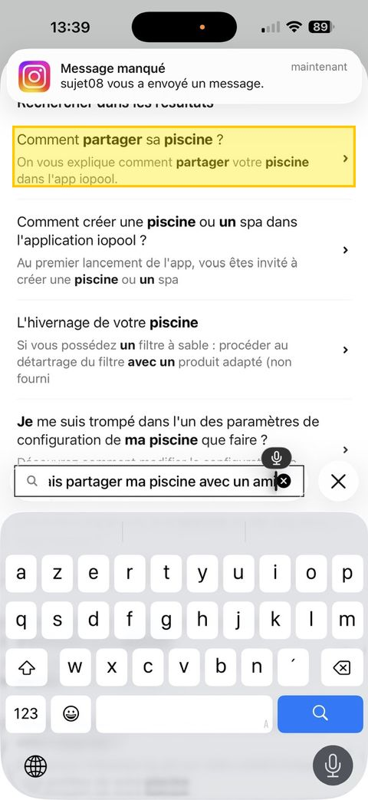
13:39 · Recherche FAQL'article « Comment partager sa piscine ? » sort en premier. La réponse existe.
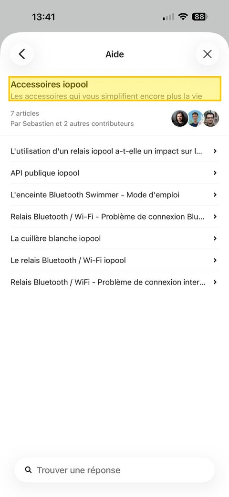
13:41 · Rubrique AideS'ouvre sur « Accessoires iopool », sans rapport avec la question.
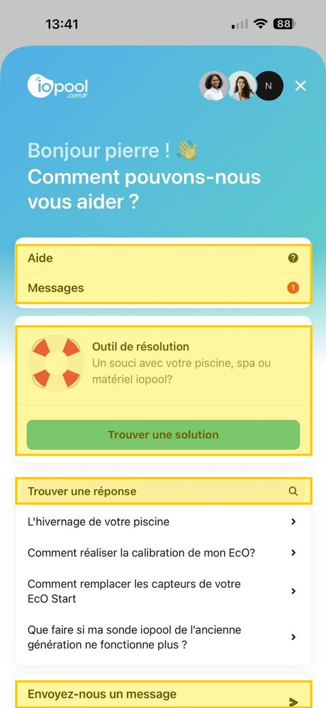
13:41 · Écran supportCinq portes d'entrée sur un seul écran : Aide, Messages, Outil de résolution, Trouver une réponse, Envoyez-nous un message.
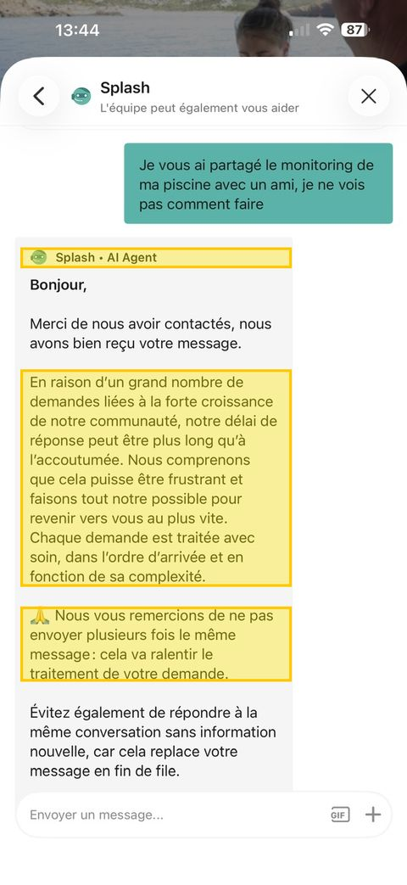
13:44 · Splash « AI Agent »Réponse à la question : accusé de réception, délai allongé, prière de ne pas renvoyer le message. Aucune réponse au fond.
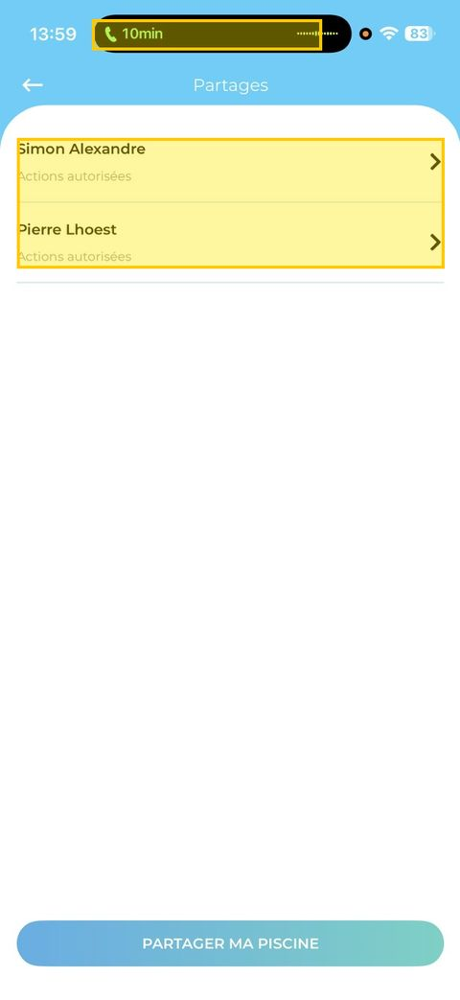
13:59 · Écran Partages trouvé seulAprès plusieurs errances dans l'app, Partages se trouve dans un sous-sous-menu : Ma piscine → Fonctionnalités → Partages. Deux partages déjà actifs.
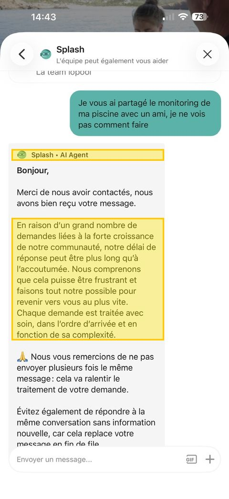
14:43 · Splash, 2ᵉ envoiMême question renvoyée une heure plus tard : même message automatique, mot pour mot.
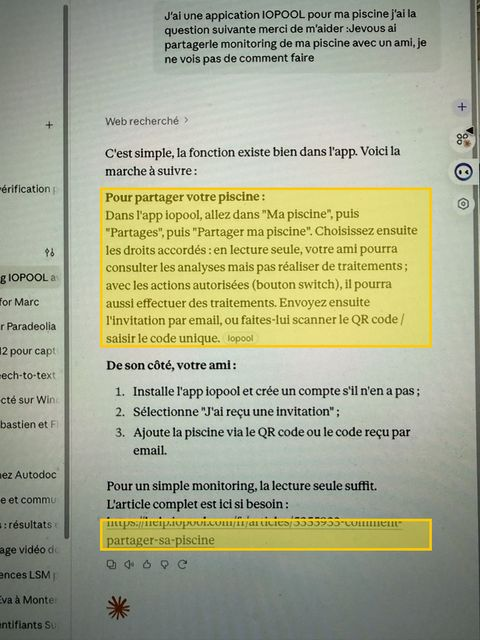
14:46 · Claude, 1 questionChemin, différence lecture seule / actions autorisées, les 3 étapes côté ami, lien vers l'article officiel help.iopool.com. Petite erreur : l'étape « Fonctionnalités » est omise.
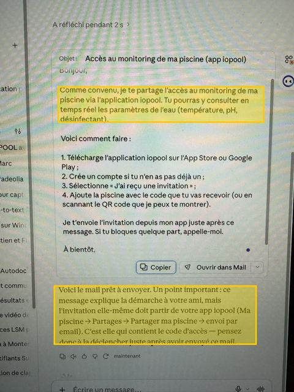
14:48 · Claude, suiteRédige le mail pour l'ami et rappelle que l'invitation (avec le code) doit partir de l'app.
App iopool
L'article existe et remonte dans la recherche, mais il est concurrencé par quatre autres accès au support.
L'agent nommé « AI Agent » ne répond pas : il met en file d'attente, deux fois.
L'utilisateur trouve la fonction par lui-même, après exploration.
Question posée 13:44 · invitation envoyée 14:41 · réponse de Splash : aucune à 14:48
Claude
Réponse complète en un échange, avec le lien vers la source iopool.
Anticipe l'étape suivante : ce que l'ami doit faire, et le mail à lui envoyer.
Ne connaît pas le compte : il ne voit pas que deux partages sont déjà en place, et se trompe d'un cran sur le chemin de menu.
14:42 · pH7,9, hors de la zone verte (7,1 – 7,7), avec deux pics au-dessus de 8,5 la même semaine.
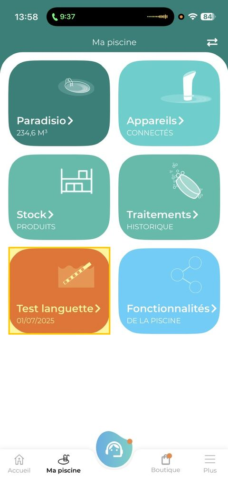
13:58 · Ma piscineLe dernier test languette enregistré date du 1ᵉʳ juillet 2025, soit 14 mois.
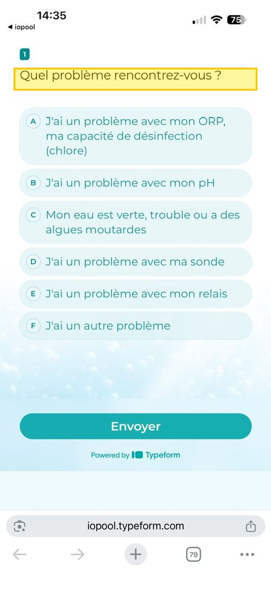
14:35 · Outil de résolutionFormulaire Typeform ouvert dans Safari, hors de l'app. Le contexte de la piscine n'est pas transmis.
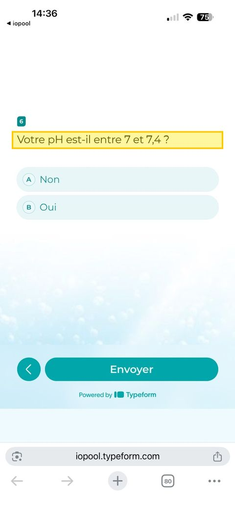
14:36 · Question 6« Votre pH est-il entre 7 et 7,4 ? » L'app affiche 7,9 depuis le matin.
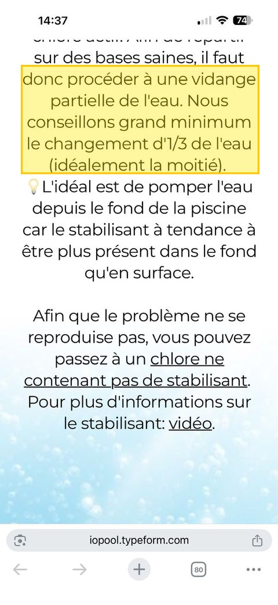
14:37 · Conclusion du formulaireStabilisant trop élevé → vidanger au minimum un tiers de l'eau (≈ 80 m³ ici), idéalement la moitié.
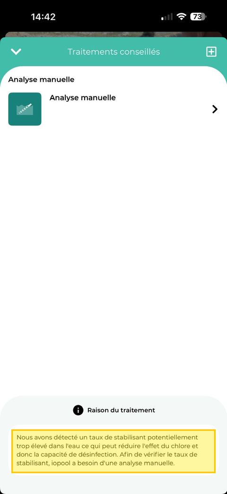
14:42 · Traitement conseillé« Taux de stabilisant potentiellement trop élevé ». L'app demande une analyse manuelle pour vérifier.
Ce que fait l'app
Sort l'utilisateur de l'app vers un formulaire générique.
Pose six questions dont au moins deux ont déjà une réponse dans ses propres données (pH, filtration).
Conclut au stabilisant sans mesure de stabilisant récente, puis recommande une vidange partielle.
Le traitement conseillé dans l'app reste au conditionnel et renvoie à un test languette.
Ce que les données montrent
Une chute d'ORP en 24 h est peu compatible avec le stabilisant seul, qui s'accumule lentement. Elle évoque plutôt une source de chlore épuisée ou un événement ponctuel (forte fréquentation, apport d'eau, orage).
Un pH à 7,9 et une eau à 30 °C réduisent à eux seuls l'efficacité du chlore.
Ces pistes sont des hypothèses. Le point est qu'elles se lisent dans les courbes, et que l'outil ne les regarde pas.
Ce qu'on en tire
Cinq points, du moins cher au plus structurant.
1. Un « AI Agent » qui n'agit pas coûte plus cher que pas d'agent.
L'étiquette promet une réponse ; un accusé de réception répété à l'identique dégrade la confiance. Le contenu existe déjà (l'article remonte en premier dans la recherche) : brancher l'agent sur le centre d'aide règle le cas 1.
2. Une seule porte d'entrée, et des boutons plutôt que des chemins.
Cinq accès au support diluent la demande. Un champ unique ; la réponse ouvre l'écran concerné (« Ouvrir Partages ») au lieu de décrire un menu, ce sur quoi même Claude s'est trompé.
3. Ne jamais redemander ce que l'app sait.
Le diagnostic part des données : tendance ORP, pH, température, date du dernier test. On ne pose que les questions que l'app ne peut pas trancher (fréquentation, apport d'eau, produit ajouté).
4. Avant de prescrire, demander la mesure qui manque.
Le dernier test languette a 14 mois. Recommander de vider 80 m³ sur cette base est prématuré, et l'app le sait puisqu'elle demande elle-même une analyse manuelle.
5. Finir le geste.
Claude a anticipé le côté de l'ami et écrit le message. L'équivalent iopool : envoyer l'invitation, ou lancer l'analyse manuelle, directement depuis la conversation.
L'avantage d'iopool sur une IA générale est le contexte : la piscine, l'historique, les partages, le matériel. Dans ce cas, c'est ce contexte qui n'a pas été utilisé. Le problème n'est pas le savoir, c'est la livraison.